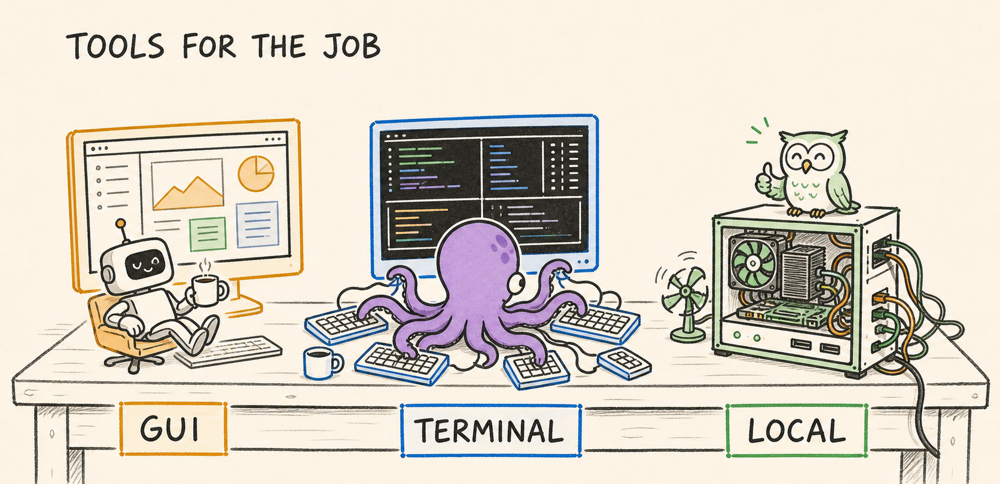
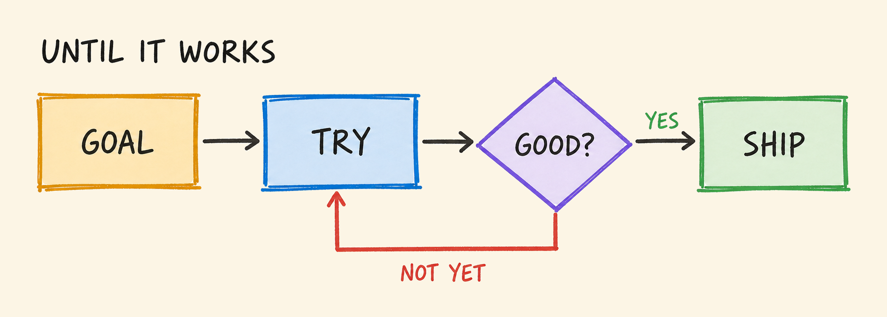
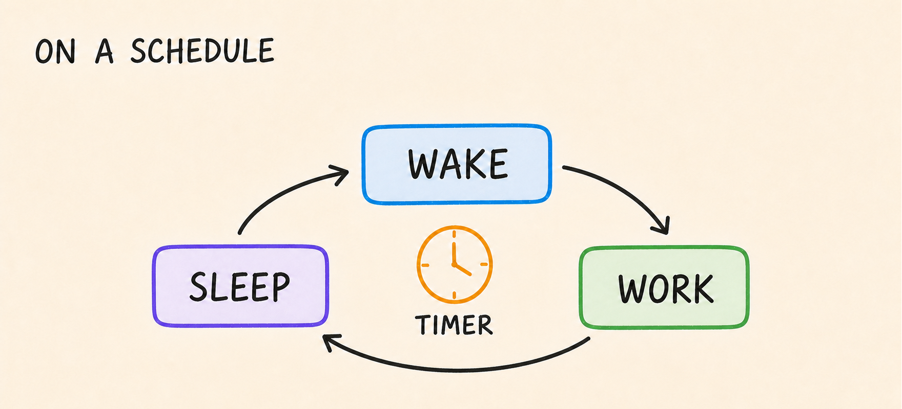

Valuemaxxing with Agents (1/N)
How I 10x My Coding & Research Output
19 Jul 2026
A few months ago I could barely get an agent to kick off my training runs. Three months later – agents launch all my runs, babysit them 24/7, fix issues, and ping me only when something needs my attention.
That is the kind of scaling – valuemaxxing – this series is about. Amazon rebuilt its Bedrock inference engine, an estimated one-year job for 40 engineers – done in 76 days by one Distinguished and five Principals. And Bun, Claude Code's JS runtime, went from Zig to Rust in 11 days, shrinking its binary and bugs. What made both possible? Agentic "workflows" and "loops" – which I'll cover in this series.
So, how do I build on agentic flows to scale my productivity? Proxy metrics aren’t perfect, but think scaling PRs, dataset generation or training runs. Let's start with:
How could you scale yourself 50×?
That's a good question because the answer points to the core issue – it's only possible if you are not the bottleneck. In your day-to-day, do you:
- Queue many short tasks? Or let agents chase long-horizon goals?
/goal - Trigger all flows? Or respond to and unblock always-on pipelines?
/loop- Think always-on workflows: agentic eval and training loops, continuous CI/CD pipelines, LMP-generated PRs and datasets, and SPOs searching best solutions.
- Are your agents proactive, watching for and creating new threads/tasks?
- Unblock every agent? Or auto-accept changes and trust agents to unblock other agents for a slice of the work?
- Review every PR? Or let adversarial agents review and test lower-risk work?
- Orchestrate manually? Or let agents drive workflows?
/workflow
Finally, do you let your money – sorry, your agents – work for you while you sleep?
Tools for the job: harnesses and models

My suggestions: prefer a GUI? Codex.app w/ GPT 5.6. Prefer terminal?
tmux & Claude w/ Opus 4.8. Free? Hermes w/ Owl-alpha or Qwen 3.5 self-host.
- Local-host: Qwen 3.5-4B, Gemma 4-E4B. Free API, owl-alpha (~20 tok/s)
- $: DeepSeek V4 Flash, Gemini 3.5 Flash or Muse Spark 1.1
- $$$: GPT 5.6, Opus 4.8, Fable 5
Codex / Claude subscriptions offer high ROI. Alternatively, OpenRouter puts many models behind one API, letting you pick your agent. You can run Codex or Claude Code with a cheaper or even free* model endpoint. Or pick Hermes, a strong agent with self-improving loops that periodically refine its memory and skills as you use it, though it takes more work to set up.
And if latency matters, OpenAI, Anthropic, and OpenRouter offer ways to trade cost for faster reply/inference. Now, let’s walk through the stages of agentic work toward higher productivity: single agents, many agents, automated loops, and finally workflows, LMPs, and SPO.
Tasker~2× output
Fix this. Explain this. Write small features. Write unit tests.
Tasker – Many start here. You treat your agent like an intern – handing it scoped tasks and checking in periodically. Bottleneck: trusting results and your time to delegate and verify. A common question:
"How can I make it code like me?" – AGENTS.md
Two layers: ~/.codex/AGENTS.md or ~/.claude/CLAUDE.md for your personal style and rules; <repo>/AGENTS.md for repo-wide rules, with additional AGENTS.md in subfolders for narrower scopes. For example, below is my GPT-5.6 personalization:
# ALL
- ALWAYS talk concisely, short final answers
- NEVER use fillers, pleasantries or narration
- ALWAYS run tools first with "/bin/zsh -lic"
# CODING
- ALWAYS prefer a high-quality but simple solution
- ALWAYS value lines removed higher than lines added; reason how to
write less code and prefer surgical changes
- AVOID excessive defensive coding
# VERIFY
- ALWAYS reproduce the issue first, then test and verify a fix
before claiming it's done or fixed
Think broad to specific: personal preferences globally, repo conventions at the root, local rules beside the code they govern. They are all concatenated and placed at the start of each session’s context. More recent instructions, including local rules and direct prompts, tend to weight more due to recency. Keep it clean – less is more, and every added rule dilutes the rest. Revisit it as models evolve – e.g., GPT-5.6 needs less guidance than GPT-5.4 due to stronger instruction following.
Overnight hack? Queue 20 tasks and go to bed. With this playbook working, the natural next step is scaling it up.
Multi-Tasker 4~5× output
Multi-Tasker – Run the same playbook across many agent terminals. Bottleneck: your attention and context switching. This is where Skills and Memory offer high ROI: they improve correctness (producing the results you expect) and efficiency (less trial and error) while reducing the time you spend prompting and checking.
“Why does every session feel like a blank canvas? Can it remember and improve from our past interactions?” – MEMORY.md
What are memories? A lightweight retrieval system. Similar to AGENTS.md, the contents of MEMORY.md are added at the start of each agent session. It’s a compact index of the most relevant things the agent has learned across sessions – each line describes one memory and links to its detailed file. As you work, the agent can read whichever memories seem relevant, keeping context small.
# Memory index
- [Title](file.md) — hook
- [Keep it simple](keep-it-simple.md) — Reject defensive machinery; smallest direct change only
- [Testing conventions](testing-conventions.md) — Use real databases in integration tests
- [Writing style](writing-style.md) — Prefer short paragraphs and concrete examples
As memories grow, relevance shifts, related entries emerge, and recall becomes increasingly lossy. Can agents dream? To manage this, agents may “dream” – deleting stale memories, merging related ones into richer entries, and making room for new learnings. Dreaming can be periodic (e.g. nightly), event-driven (e.g. after N sessions), or on demand. Memory keeps context but what about repeatable work?
“Can I teach it once, then have it repeat the task exactly as I want?” – SKILL.md
Yes, with Skills! The simplest way to create one: work through a task once, trial and error included, then ask the agent: “Review what worked, what failed, and turn it into a reusable skill.” Agents can even record as you work and learn from that.
As you use a skill, the agent can keep learning and refining it. Some do this automatically; others need a nudge. Below are cut-down examples of two skills I’ve used to generate podcasts and kick off RL runs.
SKILL.md – Daily AI podcasts with NotebookLM
name: ai-podcasts
description: >-
Create 3 daily NotebookLM AI podcasts from ResearchAudio, AI Timeline and HuggingFace.
---
# Daily NotebookLM podcasts
Create up to 3 daily NotebookLM podcasts.
## Settings
- **Deep Dive · Medium**
- Focus prompt:
`Never use analogies. Finish with a short adversarial overview.`
- Names:
- `mmmDD|ra|2day`
- `mmmDD|ait|<title>`
- `mmmDD|hf|<title>`
## Daily slots
1. **ResearchAudio**
- Combine articles from the newest 2 days.
2. **AI Timeline**
- Pick the newest undone paper from the scrape sheet.
3. **HuggingFace**
- Check the top 5 papers. Pick the highest-upvoted undone paper.
## Steps
1. **Check AI Timeline supply**
- Read `AI Timeline Scrape`.
- Refill from the latest weekly roundup, preserve existing rows.
2. **Gather candidates**
- Get ResearchAudio posts every other from the newest 2 days.
- Get the newest undone AI Timeline paper.
- Get one of the top 5 HuggingFace papers.
3. **Check NotebookLM login**
- Open NotebookLM.
- Ask the user to sign in if required.
4. **Deduplicate**
- Read existing notebook names.
- Skip candidates with a matching `mmmDD|<tag>|` notebook.
5. **Generate**
- Create each notebook sequentially.
- Add the source URLs.
- Set the notebook name.
- Generate **Deep Dive · Medium** with the fixed focus prompt.
6. **Respect quota**
- Stop at the daily audio-limit banner.
- Do not upgrade the plan.
- Mark remaining notebooks as deferred.
## Rules
...
SKILL.md – Minimal RL GRPO verl run (vast.ai)
name: verl-vastai description: Spin up a verl RL training run on a Vast.ai GPU box.
Use when the user wants to launch a RL GRPO run. --- # Run verl on Vast.ai The environment (verl + SGLang 0.5.12, Qwen3.5) is **baked into a
template. The image also ships a **dataset pool from HuggingFace**. Helpers live in `~/projects/rl_training/vastai/`
(on `$PATH` as `vf`, `vc`, `vl`, `vs`). ## Workflow
1. **Find a GPU** — `vf` Lists H100 offers (≥80GB VRAM, ≥160GB RAM, ≥190GB disk), sorted by ROI (DLperf per $). Pick the cheapest **ID**. 2. **Launch + sync** — `vc <offer-id>` Creates the instance from `verl-sgl0512`, polls until `running`,
then rsyncs the current directory up. 3. **Train** — `ssh` in (tmux is configured) and start the run:
```
python -m verl.trainer.main_ppo algorithm.adv_estimator=grpo ... \
2>&1 | tee /root/run.log
```
4. **Watch** – always, after kicking off a run:
Pool `/root/run.log` every 10 minutes with `/loop`, until done.
- Log every issue, diagnose it, and try to fix:
data formats, broken rewards, CUDA OOMs, Ray errors, NaNs, ...
Restarts ONLY when the run is broken or clearly stalled.
...
When the task is done, or blocked after exhausting fixes,
call PushNotification to alert my phone.
Re-sync code anytime with `vs <ssh-url>`. ## Rules & gotchas ...
## Stop the box `vastai destroy instance <id>` when done — it bills by the second.
Our next leap in productivity requires multiple shifts: short → long-horizon tasks. Babysitting agents → automated adversarial flows. Triggering flows → unblocking pipelines. 8h → 24h production.
The Looper ~10× output
Developers are familiar with loops and scheduled tasks, and for AI, this became popular in 2025 with "Ralph Wiggum" loops.
There are goal-based loops like /goal that execute and adapt a plan until a goal or criterion is met. Each loop can use a simple check, self-review, another agent’s adversarial review, or even ensemble voting. The plan may change as it runs, but the goal stays fixed – useful for long-running tasks – think hours or days – or work that requires repeated trial and error.

/goal Upgrade all project dependencies until CI passes without warnings.
/goal Cut API p90 latency by 50%. Benchmark every change and plot measured wins.
/goal Stress-test foobar, fix any failure you uncover, and add regression coverage.
/goal Tune my VERL config for a sub-30-hour run. Identify and test its highest-value ablations, including hybrid versus fully async. Use short parallel experiments on clusters A and B. Log results in a .md file, verify the best configuration, and estimate its full runtime. Have another agent challenge experiment results.
There are also scheduled or event-based loops /loop that execute every minute, hour, or day, or when an event happens. They may or may not have criteria for canceling future runs.

/loop 15m Inspect my [app|api|container] health metrics and error logs. If you identify a recurring or blocking issue, find its root cause, verify a fix, and open a hotfix PR.
/loop 8h Eval the latest model checkpoint.
/loop 30m Check that my evals are still progressing and their rewards are not stuck at zero.
Agents don't sleep, so neither can your machine. Codex and Claude can keep it awake while they work; Amphetamine does the job too.
With loops, every PR becomes a goal: rebase, resolve conflicts, gather agent feedback, apply fixes, run tests, then push. New features become loops with a plan, or set of focus areas. So does everything else: migrating dependencies, finding and fixing bugs, profiling code, analyzing results, and making releases.
In my setup, I run a mix of background loops that ping my phone when something needs my attention and a handful of foreground loops I steer more frequently. Loops were how I first got my agents to work through 1~2B tokens/day. In the next post, I’ll cover workflows and LMPs that have a very wide inverted funnel, turning a little prompting into far more output – scaling agents to 100B+ tokens/day.
← Back to blog